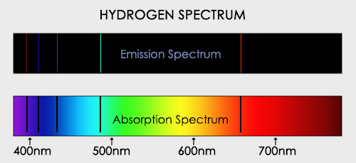
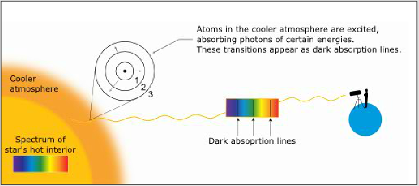
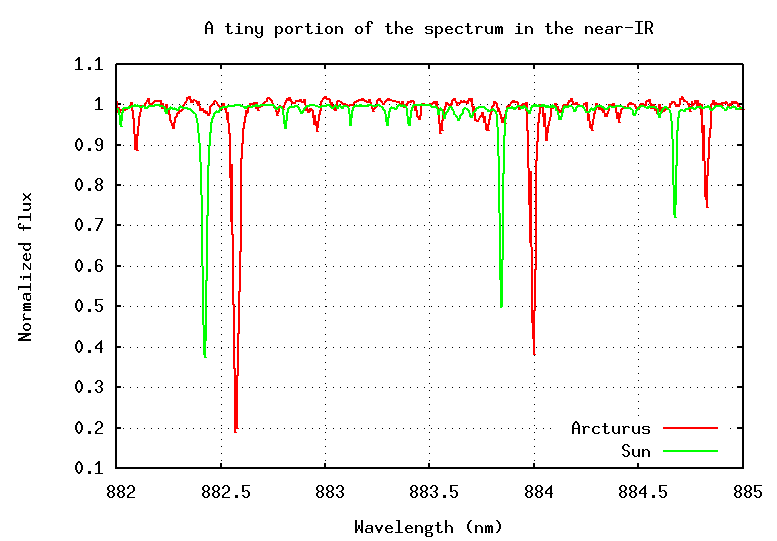
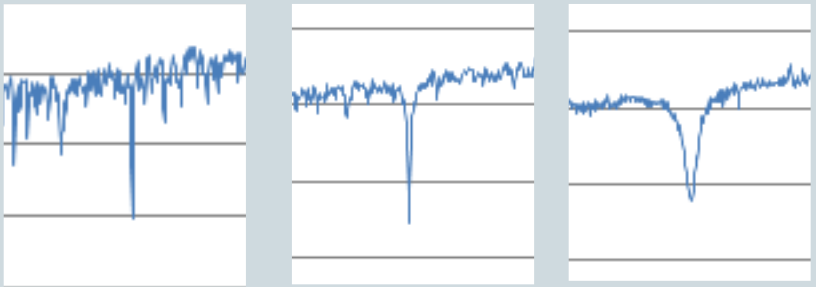
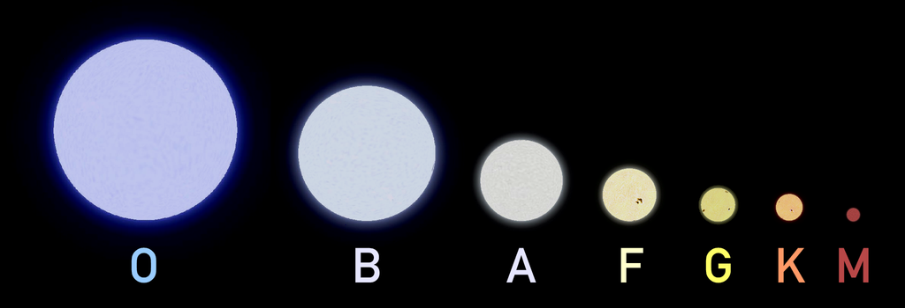
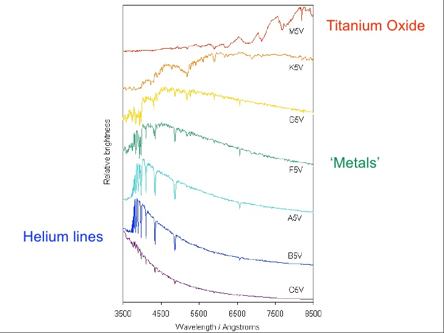
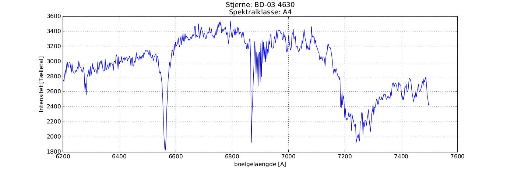
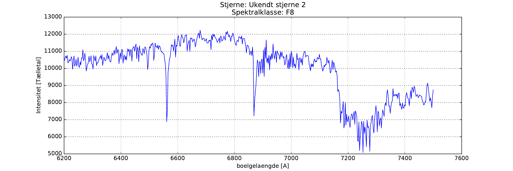

Spektralanalyse
Teknik og metoder
Astronomi C
Vibenshus Gymnasium
Simpel atomfysik
Emission

Absorption

Spektra

Fingeraftryk

Sortlegemestråling

Sortlegemestråling

Spektrallinjer + sortlegemestråling
| + | |
Spektrallinjer + sortlegemestråling

Hvorfor ser man mest absorptionslinjer fra stjerner?


- Fordi lyset skal ud gennen stjernens (kolde) atmosfære.
Men der er mere endnu
Dopplereffekten
Rød- og blåforskydning


- Stjernen Arcturus bevæger sig væk fra os, fordi spektrallinjerne er rødforskudte!
Spektralinjeudtværing
Billederne nedenfor viser den samme absorptionslinje for brint men for tre forskellige stjerner. Spektrallinjeudtværing kan skyldes mange forskellige faktorer så som:
- Temperatur (Dopplerudtværing)
- Stjernerotation
- Tryk

- Hvilken stjerne er varm, middelvarm og kold?
Dopplerudtværing

- Hvorfor skaber roterende og/eller varme stjerner bredere spektrallinjer?
Dopplerudtværing
- Atomerne i en gas bevæger sig rundt med forskellige hastigheder og i forskellige retninger.
- Nogle atomer bevæger sig i mod betragteren og andre væk. Derfor bliver nogle af lysbølgende henholdsvis blå- og rødforskydning. Dette udtværer spektrallinjen.
- I en varm gas har atomerne mere energi end i en kold gas. Derfor er Dopplerudtværingen tydeligere for varme stjerner kontra kolde stjerner.

Rotationshastighed
- Stjerner er ikke statiske objekter på nattehimlen.
- De består af en flydende masse af gas og plasma, som roterer om en fælles akse. Solen roterer en omgang på 24.5 jorddage.
- Når vi modtager et spektrum fra en fjern stjerne, er lyset samlet fra hele stjernens skive, og ikke kun fra et enkelt punkt.

Rotationshastighed
- Dette betyder, at dele af den fjerne stjerne bevæger sig i mod os og andre dele væk fra os.
- den del, som bevæger sig i mod os er blåforskudt.
- den del, som bevæger sig i væk fra os er rødforskudt.
- Nettoresultatet er, at stjernens spektrallinjer udtværes, eller bredes ud pga af rotation.
Spektralklasser
Oh Be A Fine Girl Kiss Me!

| Spektralklasse | Fremtrædende absorptionslinjer |
|---|---|
| O | He+,He,H, He, H |
| B | He,H |
| A | H(stærkest),ioniserede metaller |
| F | Ioniserede metaller |
| G | Ioniserede og neutrale metaller |
| K | Neutrale metaller |
| M | Neutrale atomer, TiO |
Opsummering
 |
 |
- Form på sortlegemestråling (Varm vs kold)
- Se efter obsorptionslinjer for bestemte grundstoffer
- (Rød og blåforskydning)
- Bredde af absorptionslinjer (Varm vs kold)
- Tydelige absorptionslinjer for brint f.eks.
Sammenlign spektre
- 9 spektre af kendte stjerner. Læg dem op i spektralklasserækkefølge. Sammenlign dem.
- Læg mærke til bredde af udvalgte spektrallinjer.
- Hydrogenlinje ved 6563 Å er god at studere.
- Varme stjerner har bredere absorptionslinjer end kolde.
- Kolde stjerner har mere "ujævne" spektre ift. varme.
- Nogle spektrallinjer optræder hos nogle stjerner og ikke andre.

2 ukendte stjerner


- Giv jeres bedste bud på disse to stjerners spektralklasse.
Og svaret er

